在玩STM32MP157C-DK2，这个板子只能用SD卡作存储介质，uboot、kernel、rootfs都是放在SD卡里面，对烧录过软件的SD卡里面的数据很感兴趣，这里从不同的方式查看SD卡里面的文件/数据。我正在用着个SD卡是16G的。烧录的系统是ST官方的Starter Package.
在window中用WinHex查看
把烧录了固件的SD卡通过读卡器插到Win7，由于window不支持SD卡中的文件系统，不能通过文件管理器打开查看SD卡，在我的电脑上会弹出如下对话框：
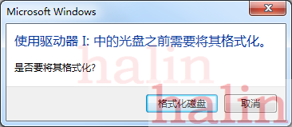
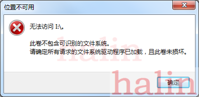
但是可以用WinHex打开，打开后如下：
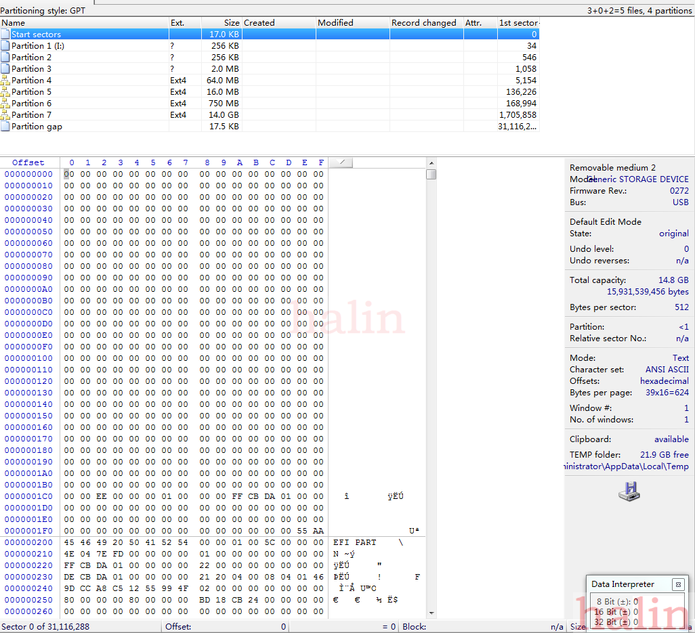
从上图中可以看到，SD卡被分为了9个区。其中4、5、6、7有文件系统，使用了Ext4格式。
在Linux中通过文件管理器查看
把有固件的SD卡用读卡器接到Linux PC，会有4个磁盘，如下：
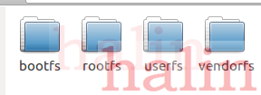
正好与win7中用winHex打开，看到的4个Ext4格式的分区对应，
4个分区中的文件为：
-
1.bootfs
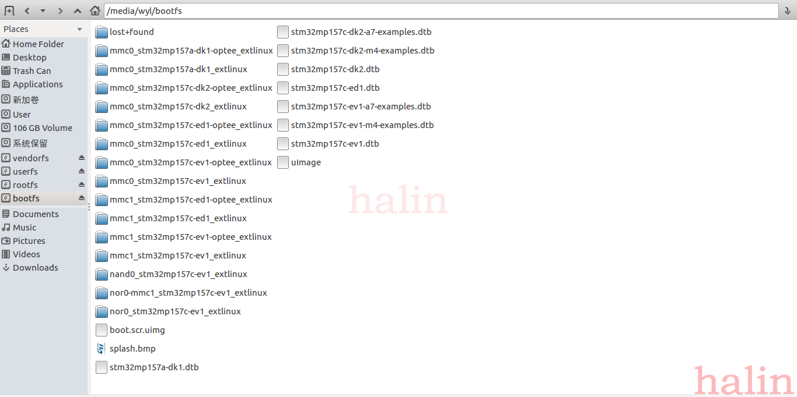
-
2.rootfs
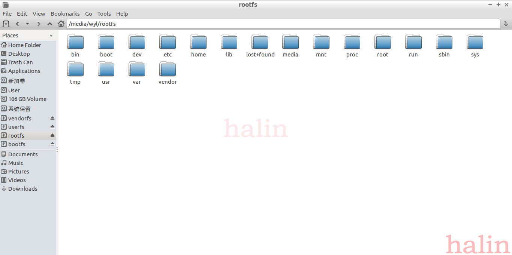
-
3.userfs
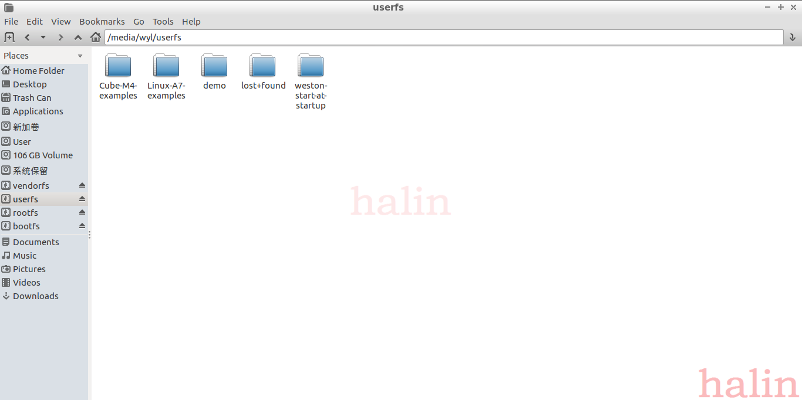
-
4.vendorfs
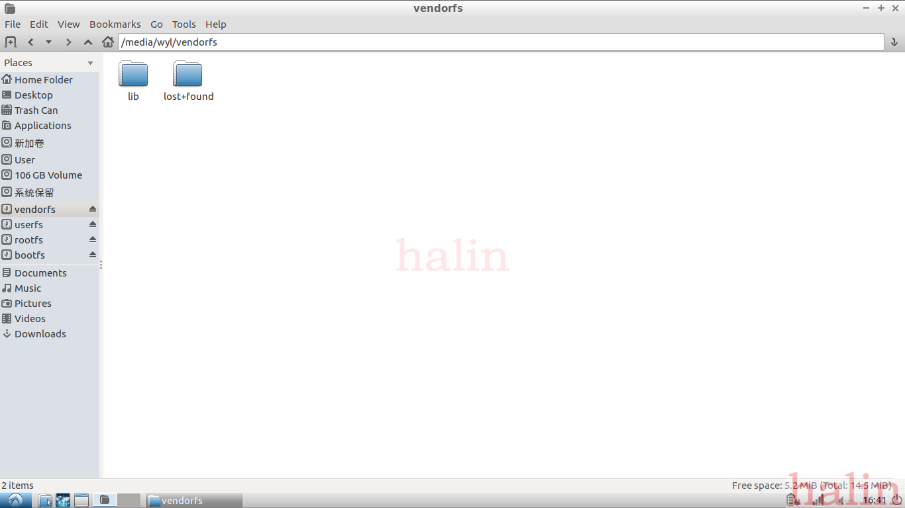
GPT
1.启动流程
从SD卡启动的流程：
- bootrom 从SD读取二进制数据的FSBL，也就是uboot spl,没有文件系统，
- FSBL再从SD卡读取SSBL，uboot部分，也是没有文件系统
- FSBL是在DRAM跑的，可是实现比较复杂的应用，所以可以支持文件系统，所以FSBL从SD卡中的分区表读取其他的启动信息根内核，启动内核
那怎么从SD卡中定位FSBL、SSBL？
2.磁盘分区
这个跟磁盘分区有关，STM32MP157用的是GPT分区，在SD卡的前几个分区有SD卡的分区信息，从这些信息可以知道哪些信息存放在哪里，GPT分区结构如下：
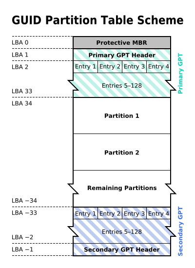
GPT分区的分区表：
- LBA 0 保护性MBR
- LBA 1 GPT头
- LBA 2-33 分区表项，记录了各个分区的信息
- 分区
- LBA -33 - -1 是GPT头跟分区表项的备份部分
LBA 0
保护性MBR(Protective MBR)，在磁盘的第一个扇区（LBA 0），Protective MBR 的数据格式如下：
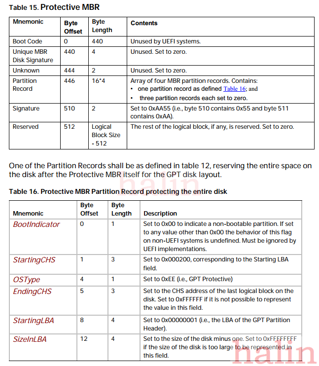
STM32MP SD卡中保护性MBR为：
00
00 00 00
ee
00 00 00
01 00 00 00
ff cb da 01
其中0xee值标注了该分区为GPT分区
LBA 1
GPT头，下图是STM32MPU1 SD卡中的LBA 1中的数据：
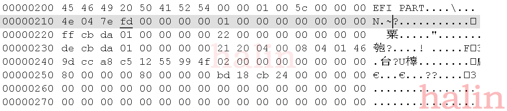
-
前8字节是签名（Signature），EFI PART（0x5452415020494645），
-
4字节的版本号：0x00010000
-
4自己的GPT header大小：0x0000005c，92字节，
-
4字节的HeaderCRC32
-
4字节保留，为0x00
-
8字节地址，当前数据所在的LBA
-
8字节地址，GPT Header备份所在LBA，这里是0x1dacbff，下图是WinHex中的第0x1dacbff扇区的数据：
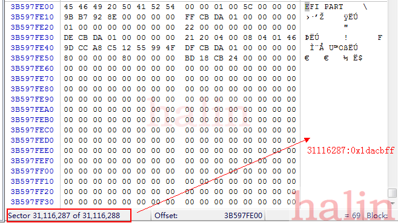
- 8字节地址，第一个分区所在地址，0x00000000 00000022，十进制是34，在WinHex中跳转到34扇区，结果如下：正好是Partition 1所在的位置，
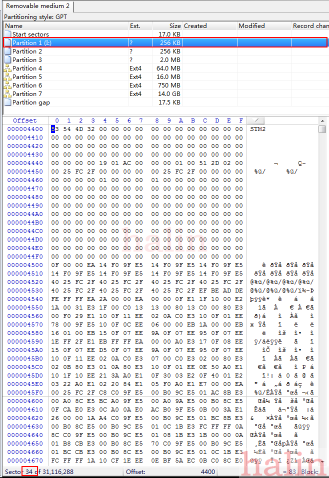
-
8字节地址，最后一个分区所在地址：0x00000000 01dacbde
-
16字节，磁盘的GUID，即唯一标识符
-
GPT入口，即开始所在的LBA
-
4字节：0x00 00 00 80 = 128，分区表总项数，通常限定为“80 00 00 00”(0x80)，也就是128个。
-
4字节，每个分区表项占用字节数，通常限定为“80 00 00 00”(0x80)，也就是128字节。
-
4字节，PartitionEntryArrayCRC32，分区表CRC校验和
为了减少分区表损坏的风险，GPT在硬盘最后保存了一份分区表的副本。(GPT数据结构在磁盘上存储两次：开始和结束各一次。)
3 分区表项
-
分区表的格式
分区表的格式如下：
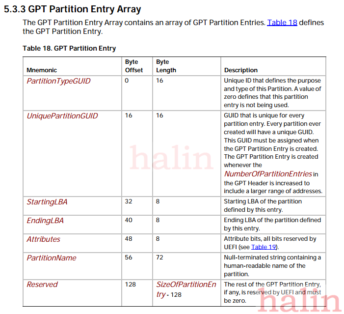
- 第一个是分区类型GUID，16字节
- 第二个是分区GUID，16字节
- 第三个是起始LBA，8字节，
- 第四个是末尾LBA，8字节，
- 第五个是属性，
-
第六部分是分区名
-
STM32MPU中的分区表项
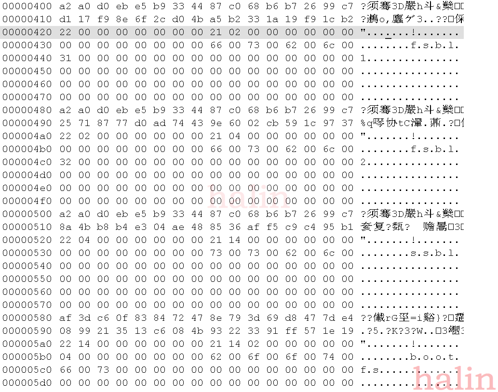
-
第一部分：
- 分区类型GUID，原始数据是：
a2 a0 d0 eb e5 b9 33 44 87 c0 68 b6 b7 26 99 c7
由于这里是小端格式，读出来的数据应该是：
EBD0A0A2-B9E5-4433-87C0-68B6B72699C7
数据分区
-
分区GUID
-
起始LBA
-
末尾LBA
-
属性
-
分区名：fsbl1
-
第四部分：
- 分区类型GUID，原始数据是：
0FC63DAF-8483-4772-8E79-3D69D8477DE4
数据分区。Linux曾经使用和Windows基本数据分区相同的GUID。 这个新的GUID是由 GPT fdisk 和 GNU Parted 开发者根据Linux传统的"8300"分区代码发明的。
参考：
-
Unified Extensible Firmware Interface Specification
- [UEFI实战](http://www.cppblog.com/djxzh/archive/2011/10/02/157325.html)
- Windows GPT磁盘GUID结构详解
- 主引导记录
- 全局唯一标识分区表
- GPT分区表
- A Quick Tour of GUID Partition Table (GPT)
- Disk Format
- GUID Partition Table